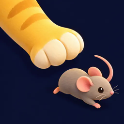
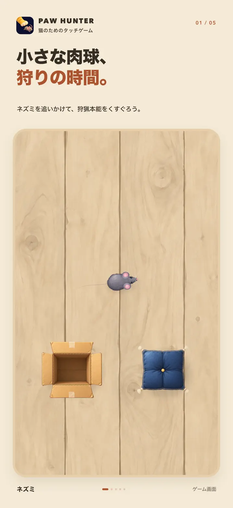
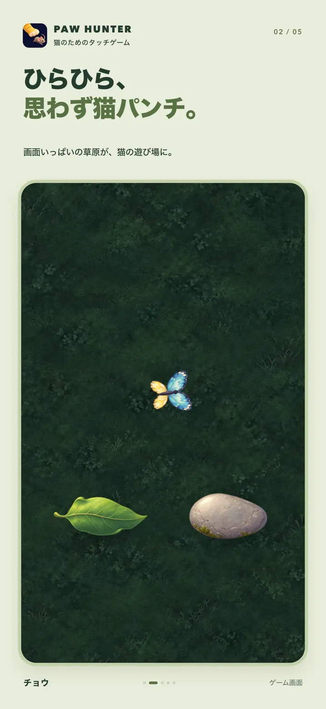
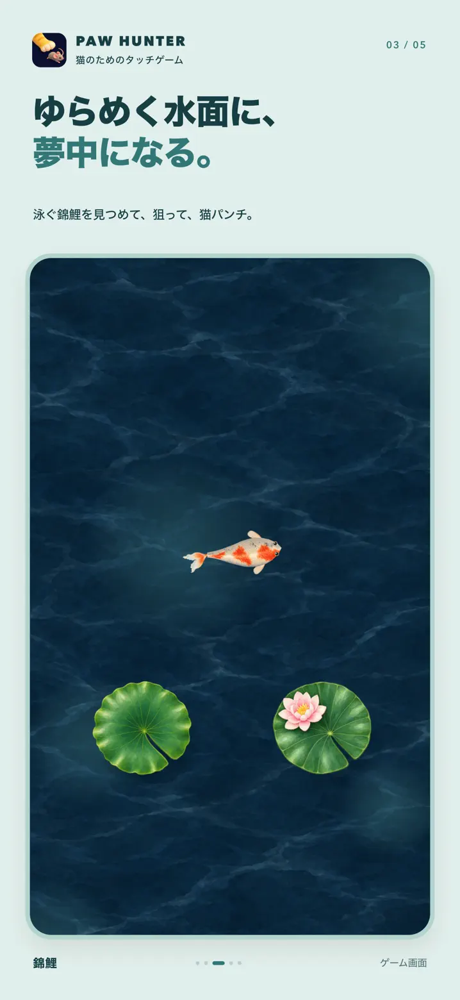
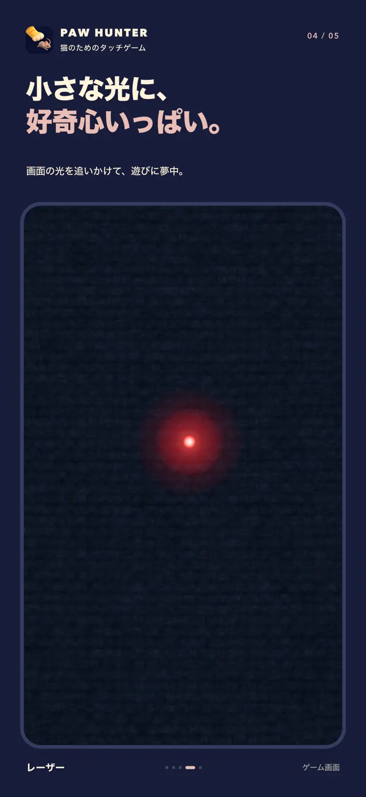

Paw Hunter
Touch game for cats, on iPhone and iPad
A little hunt for curious paws.
Put your iPhone or iPad on a steady surface, stay close, and let your cat chase a mouse, a butterfly, koi or a dot of light across the screen.
Free on iPhone and iPad



Screens
Four kinds of prey, each with its own ground.

What it does
Four kinds of prey
A darting mouse, a fluttering butterfly, swimming koi and a gliding dot of light. Earn coins through play to unlock more.
Set to your cat
Adjust how fast the prey moves and how many there are, until it suits your cat.
Places to hide
Add hiding places for the prey to slip behind, or keep the play area clear.
After each hunt
See how many catches, how long the hunt lasted and the best combo.
Your own prey
Turn a photo on your device into custom prey with the premium photo option.
No ads mid-hunt
No account needed. Play and progress stay on the device, and no ads appear while your cat is hunting.
Before you download
- Price
- Free. Some prey unlock with coins earned through play. The photo option and removing the daily play limit use Paw Gems, sold in the app. Rewarded ads outside a hunt can give coins or extra plays.
- Works on
- iPhone and iPad with iOS 15.0 or later
- Your data
- Photos and progress stay on your device. No account needed.
- Good to know
- Stay with your cat while it plays, keep sessions short and keep the device steady. Every cat plays differently.
On a computer? Scan with your phone's camera.